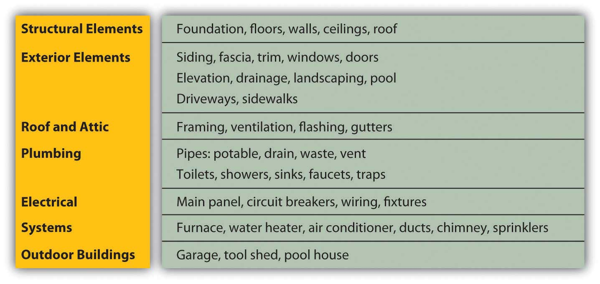
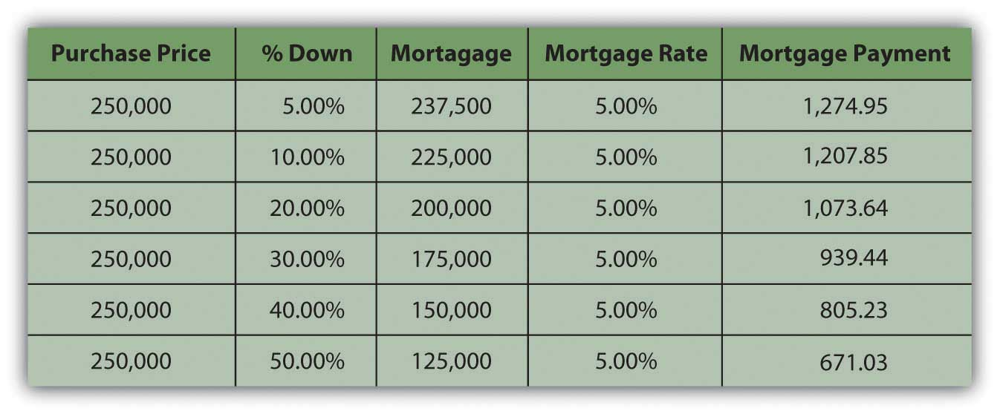
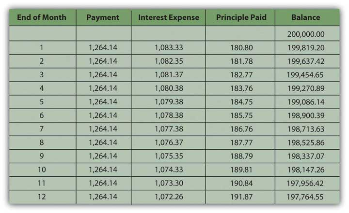
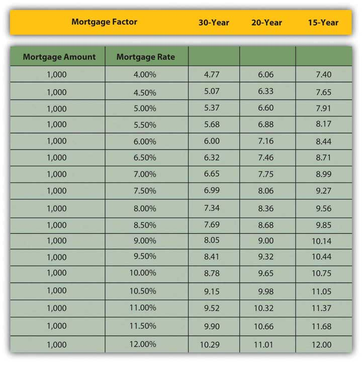
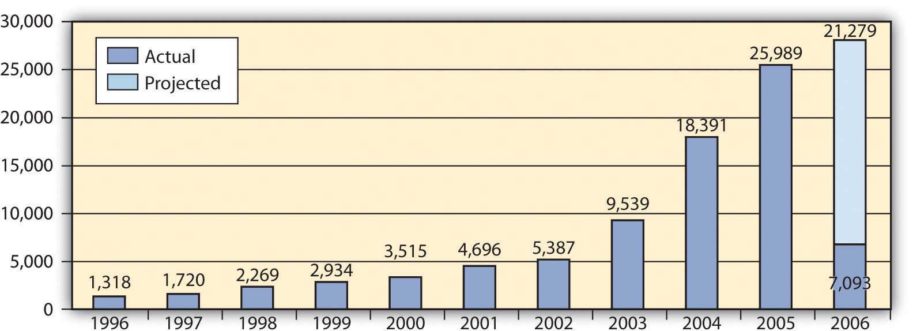

Be it ever so humble, the “biggest” purchase you ever make may be your home. Unlike most other consumer purchases, a home is expected to be more than a living space; it is also an asset that stores and increases value. The house has a dual financial role as both a nest and a nest egg.
There are substantial annual operating expenses for repairs and maintenance, insurance, and taxes. Maintenance preserves a home’s value, insurance protects that value, and taxes for community services both enhance and secure its value.
A home purchase is typically financed with debt that creates a significant monthly expense, the mortgage payment, in your budget. A mortgage is a long-term debt that obligates your cash flows for a long time, perhaps even reducing your choices of careers and your mobility.
Your choice of home reflects personal factors in your life. These factors include your personal tastes, your age and stage of life, your family size and circumstances, your health, and your career choices. These factors are reflected in your decision to own a home, as well as in the location, size, and use of your home.
If you have already decided on a goal of home ownership, you have already compared the costs and benefits of the alternative, which is renting. Renting requires relatively few initial legal or financial commitments. The renter signs a lease that spells out the terms of the rental agreement: term, rent, terms of payments and fees, restrictions such as pets or smoking, and charges for damages. A renter is usually required to give the landlord a security deposit to cover the landlord’s costs of repairs or cleaning, as necessary, when the tenant moves out. If the deposit is not used, it is returned to the departing tenant (although without any interest earned).
Some general advantages and disadvantages of renting and owning are shown in Figure 9.2 "Renting versus Owning".
Figure 9.2 Renting versus Owning

The choice of whether to rent or to own follows the pattern of life stages. People rent early in their adult lives because they typically have fewer financial resources and put a higher value on mobility, usually to keep more career flexibility. Since incomes are usually low, the tax advantages of ownership don’t have much benefit.
As family size grows, the quality of life for dependents typically takes precedence, and a family looks for the added space and comfort of a home and its benefits as an investment. This is the mid-adult stage of accumulating assets and building wealth. As income rises, the tax benefit becomes more valuable, too.
Often, in retirement, with both incomes and family size smaller, older adults will downsize to an apartment, shedding responsibilities and financial commitments.
Home ownership decisions vary: some people just never want the responsibilities of ownership, while some just always want a place of their own.
Finding an apartment is much like finding a home in terms of assessing its attributes, comparing choices, and making a choice. Landlords, property managers, and agents all rent properties and use various media to advertise an available space. Since the rent for an apartment is a regular expense, financed from current income (not long-term debt), you need to find only the apartment and not the financing, which simplifies the process considerably.
Once you decide to own your home, you must choose the home to own, considering the different kinds of homes and of home ownership.
There are single- and multiple-unit dwellings, for example. A multiple-unit dwellingA residential building including more than one housing unit, such as a duplex, triplex, or apartment building. can be used to create rental income or to house extended family members, but this choice imposes the responsibilities of being a landlord and also limits privacy.
There are previously owned, new, and custom-built homes. Previously owned homes may require some renovation to make them comfortably modern and convenient. New and custom-built homes typically have more modern features and conveniences and require less maintenance and repair expense. Custom-built homes are built to the homeowners’ specifications.
Sales of existing single-family homes far outnumber sales of new and custom homes. In the month of February 2009, for example, 4.72 million existing homes were sold compared to 337,000 sales of new homes. The average price of a new house in February 2009 in the United States was $251,000.National Association of Home Builders, http://www.nahb.org/fileUpload_ details.aspx?contentTypeID=3&contentID=97096&subContentID=153510 (accessed November 23, 2009).
Mobile homesA manufactured home, usually under 1,000 sq. ft. in size. are large trailers fitted with utilities connections, which can be installed on permanent sites and used as residences. A mobile home may also be situated in a trailer park or mobile home community where the owner rents a lot. Mobile homes are often referred to as manufactured homes, and other examples of manufactured homes are prefabricated or modular homes, which are moved to a foundation site by trailer and then assembled.
In a condominiumAn ownership arrangement where individual housing units are owned by individual owners, while common spaces are owned by the condominium association of unit owners., the homeowner owns a unit in a multiple-unit dwelling, but the common areas of the building are owned and managed by the condominium owners’ association. Condo owners pay a fee to cover the costs of overall building maintenance and operating expenses for common areas.
Cooperative housingAn ownership arrangement where the right to inhabit living space is claimed by the purchase of shares in the cooperative ownership of a multi-unit dwelling. is a unit in a building or complex owned by a nonprofit association or a corporation for the residents’ use. Residents do not own the units, but rather own shares in the cooperative association, which entitles them to the right to dwell in its housing units.
Personal factors such as your age, family size, health, and career help you to answer some of the following key questions:
After ranking the importance of such attributes, you can use an attribute-scoring matrix to score your choices. After understanding exactly what you are looking for in a home, you should begin to think about how much house you can afford.
Before looking for a house that offers what you want, you need to identify a price range that you can afford. Most people use financing to purchase a home, so your ability to access financing or get a loan will determine the price range of the house you can buy. Since your home and your financing are long-term commitments, you need to be careful to try to include future changes in your thinking.
For example, Jill and Jack are both twenty-five years old, newly married, and looking to buy their first home. Both work and earn good incomes. The real estate market is strong, especially with mortgage rates relatively low. They buy a two-bedroom condo in a new development as a starter home.
Fast-forward five years. Jill is expecting their second child; while the couple is happy about the new baby, neither can imagine how they will all fit in their already cramped space. They would love to sell the condo and purchase a larger home with a yard for the kids, but the real estate market has slowed, mortgage rates have risen, and a plant closing last year has driven up unemployment in their area. Jill hasn’t worked outside the home since their first child was born two years ago—they are just getting by on one salary and a new baby will increase their expenses—making it even more difficult to think about financing a larger home.
A lender will look at your income, your current debts, and credit history to assess your ability to assume a mortgage. As discussed in Chapter 7 "Financial Management", your credit score is an important tool for the lender, who may also request verification of employment and income from your employer.
Lenders do their own calculations of how much debt you can afford, based on a reasonable percentage, usually about 33 percent, of your monthly gross income that should go toward your monthly housing costs, or principal, interest, taxes, and insurance (PITI)Principal, interest, taxes, and insurance are the costs of home ownership. PITI is usually calculated on a monthly basis in the process of determining the affordability of a mortgage.. If you have other debts, your PITI plus your other debt repayments should be no more than about 38 percent of your gross income. Those percentages will be adjusted for income level, credit score, and amount of the down payment.
Say the lender assumes that 38 percent of your monthly gross income (annual gross income divided by twelve) should cover your PITI plus any other debt payments. Subtracting your other debt payments and estimated cost of taxes and insurance leaves you with a figure for affordable monthly mortgage payments. Dividing that figure by the mortgage factor for your mortgage’s maturity and mortgage rate shows the affordable mortgage overall. Knowing what percentage your mortgage will be of the home’s purchase price, you can calculate the maximum purchase price of the home that you can afford. That affordable home purchase price is based on your gross income, other debts, taxes, insurance, mortgage rate, mortgage maturity, and down payment.
Figure 9.5 "Mortgage Affordability Calculation" shows an example of this calculation for a thirty-year, 6.5 percent mortgage.
Figure 9.5 Mortgage Affordability Calculation

These kinds of calculations give both you and your lender a much clearer idea of what you can afford. You may want to sit down with a potential lender and have this discussion before you do any serious house hunting, so that you have a price range in mind before you shop. Mortgage affordability calculators are also available online.
After understanding exactly what you are looking for in a home and what you can afford, you can organize your efforts and begin your search.
Typically, buyers use a realtorA salesperson for real estate, usually hired by the seller to help price, advertise, and show the property and negotiate the actual sale. and realty listings to identify homes for sale. A real estate broker can add value to your search by providing information about the house and property, the neighborhood and its schools, recreational and cultural opportunities, and costs of living.
Remember, however, that the broker or its agent, while helping you gather information and assess your choices, is working for the sellers and will be compensated by the seller when a sale is made. Consider paying for the services of a buyer’s agent, a fee-based real estate broker who works for the buyer to identify choices independently of the purchase. The real estate industry is regulated by state and federal laws as well as by self-regulatory bodies, and real estate agents must be licensed to operate.
Increasingly, sellers are marketing their homes directly to save the cost of using a broker. A real estate broker typically takes a negotiable amount up to 6 percent of the purchase price, from which it pays a commission to the real estate agent. “For sale by owner” sites on the Internet can make the exchange of housing information easier and more convenient for both buyers and sellers. For example, Web sites such as Picketfencepreview.com serve home sellers and buyers directly. Keep in mind, however, that sellers acting as their own brokers and agents are not licensed or regulated and may not be knowledgeable about federal and state laws governing real estate transactions, potentially increasing your risk.
After you narrow your search and choose a prospective home in your price range, you have the home inspected to assess its condition and project the cost of any repairs or renovations. Many states require a home inspection before signing a purchase agreement or as a condition of the agreement. A standard home inspection checklist, based on information from the National Association of Certified Home Inspectors, is shown in Figure 9.6 "Standard Home Inspection Checklist".
Figure 9.6 Standard Home Inspection Checklist
As with a car, it is best to hire a professional (a structural engineer, contractor, or licensed home inspector) to do the home inspection. For example, see the American Association of Home Inspectors at http://www.ashi.org/. A professional will be able to spot not only potential problems but also evidence of past problems that may have been fixed improperly or that may recur—for example, water in the basement or leaks in the roof. If there are problems, you will need an estimate for the cost of fixing them. If there are significant and immediate repair or renovation costs projected by the home’s condition, you may try to reduce the purchase price of the property by those costs. You don’t want any surprises after you buy the house, especially costly ones.
You will also want to do a title search, as required by your lender, to verify that there are no liensAn interest in a property granted to secure payment of debt. or claims outstanding against the property. For example, the previous owners may have had a dispute with a contractor and never paid his bill, and the contractor may have filed a lien or a claim against the property that must be resolved before the property can change hands. There are several other kinds of liens; for example, a tax lien is imposed to secure payment of overdue taxes.
A lawyer or a title search company can do the search, which involves checking the municipal or town records where a lien would be filed. A title search will also reveal if previous owners have deeded any rights—such as development rights or water rights, for example, or grants of right-of-way across the property—that would diminish its value.
Housing costs are determined by the price of the house and by the price of the debt that finances the house. House prices are determined by forces of supply and demand, which in turn are determined by macroeconomic circumstances.
When the economy is contracting and incomes are decreasing, and especially if unemployment rises and incomes become uncertain, buyers are hesitant to add the significant financial responsibility of new debt to their budgets. They tend to continue with their present arrangements or may try to move into cheaper housing, downsizing to a smaller house, an apartment, or condo to decrease operating expenses. When the economy is expanding, on the other hand, expectations of rising incomes may encourage buyers to be bolder with their purchasing decisions.
A house represents not only a housing expense but also an investment that can serve as a store of wealth. In theory, if a contraction creates a market with declining asset values, investors will seek out alternative investments, abandoning that market. In other words, if house prices decline, the house’s value as an investment will decline. Investors will seek other assets in which to store wealth to avoid the opportunity cost of making an investment that does not generate returns.
Housing markets are local, however. If the local economy is dominated by one industry or by one large employer, the housing market will be sensitive to the fate of that industry or employer. If a location has value independent of the local economy, such as value as a vacation or retirement location, that value can offset local concerns. In that case, housing prices may be less sensitive to the local economy.
Since a house is an investment, the home buyer is concerned about its expected future value. Future value is not easy to predict, however, as housing markets have some volatility. In extreme periods, for example between 2004 and 2009, there was extreme volatility (read more on the real estate bubble in Chapter 13 "Behavioral Finance and Market Behavior"). Thus, depending on how long you intend to own the home, it may or may not be realistic to try to predict price trends based on macroeconomic cycles or factors. Some areas may seem to be always desirable, such as Manhattan’s East Side or Malibu, California, but a severe economic shock or boom can affect prices in those areas as well.
Figure 9.7 "U.S. Housing Prices 1890–2005 (Inflation-Adjusted Dollars)" shows housing prices in the United States from 1890 to 2005 in inflation-adjusted dollars.
Figure 9.7 U.S. Housing Prices 1890–2005 (Inflation-Adjusted Dollars)

The data in Figure 9.7 "U.S. Housing Prices 1890–2005 (Inflation-Adjusted Dollars)" display some remarkable stability to housing prices. For example, for the half-century from the end of World War II until the mid-1990s, housing prices were fairly flat, as they were in the period from around 1920 to 1940. This suggests that while a house may be used to store value, it may not generate a real increase in wealth. It seems that over the long term, housing prices are not highly sensitive to economic cycles, population growth, building costs, or even interest rates.
Since the early 2000s, however, housing prices have soared. Most economists attribute this to a sustained period of low unemployment rates, low mortgage rates, and economic growth. As bubbles do, this one eventually burst in 2007 as the economy slumped into a recession. Housing demand and prices fell, even with low mortgage rates, creating a real buyer’s market. Many economists attribute the severity of the slump to the banking crisis that froze the credit markets, because most housing purchases are financed with debt.
Ability to buy a house rests on the ability to finance the purchase, to provide a down payment, and to borrow. That ability is determined by the buyer’s personal situation (e.g., stability of employment or income, credit history) and by macroeconomic events such as interest rate levels, expected inflation, and liquidity in the credit markets. If interest rates and inflation are low and there is liquidity in the credit markets, it will be easier for buyers to borrow than if inflation and interest rates are high and the credit market is illiquid. Demand for housing thus relies on the availability of credit for the housing market.
Different building structures are
Different ownership structures include
The buyer’s inspection checklist includes
Housing prices may be affected by business cycles as they affect
Housing prices are affected by the availability of home financing, which in turn depends on
Perform an attribute analysis of your projected wants and needs as a homeowner. Begin by prioritizing the following personal and microeconomic factors in terms of their importance to you in deciding when to buy a home.
Just as your house may be your most significant purchase, your mortgage may be your most significant debt. The principal may be many times one year’s disposable income and may need to be paid over fifteen or thirty years. The house secures the loan, so if you default or miss payments, the lender may forecloseThe repossession of real property by a lender after a default on the mortgage by the borrower, assuming the real property has acted as collateral for the financing. on your house or claim ownership of the property, evict you, and resell the house to recover what you owed. You may lose not only your house but also your home.
Banks, credit unions, finance companies, and mortgage finance companies sell mortgages. They profit by lending and competing for borrowers. It makes sense to shop around for a mortgage, as rates and terms (i.e., the borrowers’ costs and conditions) may vary widely. The Internet has made it easy to compare; a quick search for “mortgage rates” yields many Web sites that provide national and state averages, lenders in your area, comparable rates and terms, and free mortgage calculators.
You may feel more comfortable getting your mortgage through your local bank, which may process the loan and then sell the mortgage to a larger financial institution. The local bank usually continues to service the loan, to collect the payments, but those cash flows are passed through to the financial institution (usually a much larger bank) that has bought the mortgage. This secondary mortgage market allows your local bank to have more liquidity and less risk, as it gets repaid right away, allowing it to make more loans. As long as you continue to make your payments, your only interaction is with the bank that is servicing the loan. Alternatively, local banks may earmark a percentage of mortgages to keep “in house” rather than sell.
The U.S. government assists some groups to obtain home loans, such as Native Americans, Americans with disabilities, and veterans. See, for example, http://www.homeloans.va.gov/ondemand_ vets_stream_video.htm.
Keep in mind that the costs discussed in this chapter, associated with various kinds of mortgages, may change. The real estate market, government housing policies, and government regulation of the mortgage financing market may change at any time. When it is time for you to shop for a mortgage, therefore, be sure you are informed of current developments.
Mortgages require a down paymentThe share of the purchase price paid in cash at the time of purchase; also called earnest money., or a percentage of the purchase price paid in cash upon purchase. Most buyers use cash from savings, the proceeds of a house they are selling, or a family gift.
The size of the down payment does not affect the price of the house, but it can affect the cost of the financing. For a certain house price, the larger the down payment, the smaller the mortgage and, all things being equal, the lower the monthly payments. An example of a thirty-year mortgage is shown in Figure 9.9 "Down Payment and Monthly Payment".
Figure 9.9 Down Payment and Monthly Payment
Usually, if the down payment is less than 20 percent of the property’s sale price, the borrower has to pay for private mortgage insuranceInsurance that insures the lender against any losses incurred by the costs of a loan default., which insures the lender against the costs of default. A larger down payment eliminates this expense for the borrower.
The down payment can offset the annual cost of the financing, but it creates opportunity cost and decreases your liquidity as you take money out of savings. Cash will also be needed for the closing costsTransaction costs of the home purchase, including appraisal fees, title, fee, and title insurance; closing costs are paid at the closing or purchase of the home. or transaction costs of this purchase or for any immediate renovations or repairs. Those needs will have to be weighed against your available cash to determine the amount of your down payment.
The monthly payment is the ongoing cash flow obligation of the loan. If you don’t pay this payment, you are in default on the loan and may eventually lose the house with no compensation for the money you have already put into it. Your ability to make the monthly payment determines your ability to keep the house.
The interest rate and the maturity (lifetime of the mortgage) determine the monthly payment amount. With a fixed-rate mortgageA mortgage loan with a fixed interest rate over the life of the loan., the interest rate remains the same over the entire maturity of the mortgage, and so does the monthly payment. Conventional mortgages are fixed-rate mortgages for thirty, twenty, or fifteen years.
The longer the maturity, the greater the interest rate, because the lender faces more risk the longer it takes for the loan to be repaid.
A fixed-rate mortgage is structured as an annuity: regular periodic payments of equal amounts. Some of the payment is repayment of the principal and some is for the interest expense. As you make a payment, your balance gets smaller, and so the interest portion of your next payment is smaller, and the principal payment is larger. In other words, as you continue making payments, you are paying off the balance of the loan faster and faster and paying less and less interest.
An example of a mortgage amortizationA schedule of mortgage payments showing the amounts of each payment that pay interest and that pay principal., or a schedule of interest and principal payments over the life of the loan, is shown in Figure 9.10 "A Mortgage Amortization: Year One of a Thirty-Year, Fixed-Rate 6.5 Percent Mortgage". The mortgage is a thirty-year, fixed-rate mortgage. Only year one is shown, but the spreadsheet extends to show the amortization over the term of the mortgage.
Figure 9.10 A Mortgage Amortization: Year One of a Thirty-Year, Fixed-Rate 6.5 Percent Mortgage
In the early years of the mortgage, your payments are mostly interest, while in the last years they are mostly principal. It is important to distinguish between them because the mortgage interest is tax deductible. That tax benefit is greater in the earlier years of the mortgage, when the interest expense is larger.
Monthly mortgage payments can be estimated using the mortgage factorThe mortgage payment per $1,000 of principal.. The mortgage factor is a calculation of the payment per $1,000 of the mortgage loan, given the interest rate and the maturity of the mortgage. Mortgage factors for thirty-, twenty-, and fifteen-year mortgages are shown in Figure 9.11 "Mortgage Factors for Various Mortgage Rates".
Figure 9.11 Mortgage Factors for Various Mortgage Rates
The monthly payment can be calculated as
mortgage factor × principal ÷ 1,000.So, if you were considering purchasing a house for $250,000 with a $50,000 down payment and financing the remaining $200,000 with a thirty-year, 6.5 percent mortgage, then your monthly mortgage payment would be 6.32 × $200,000 ÷ 1,000 = $1,264. If you used a fifteen-year mortgage, your monthly payment would be 8.71 × $200,000 ÷ 1,000 = $1,742. If you got the thirty-year mortgage but at a rate of 6 percent, your monthly payment would be $1,200.
Potential lenders and many Web sites provide mortgage calculators to do these calculations, so you can estimate your monthly payments for a fixed-rate mortgage if you know the mortgage rate, the term to maturity, and the principal borrowed.
So far, the discussion has focused on fixed-rate mortgages, that is, mortgages with fixed or constant interest rates, and therefore payments, until maturity. With an adjustable-rate mortgage (ARM)A mortgage loan with a floating or adjustable rate of interest., the interest rate—and the monthly payment—can change. If interest rates rise, the monthly payment will increase, and if they fall, it will decrease. By federal law, increases in ARM interest rates cannot rise more than 2 percent at a time, but even with this rate capA limit on the potential adjustment to the mortgage interest rate., homeowners with ARMs are at risk of seeing their monthly payment increase. Borrowers can limit this interest rate risk with a payment cap, which, however, introduces another risk.
A payment capA limit to the potential adjustment to the mortgage payment. limits the amount by which the payment can increase or decrease. That sounds like it would protect the borrower, but if the payment is capped and the interest rate rises, more of the payment pays for the interest expense and less for the principal payment, so the balance is paid down more slowly. If interest rates are high enough, the payment may be too small to pay all the interest expense, and any interest not paid will add to the principal balance of the mortgage.
In other words, instead of paying off the mortgage, your payments may actually increase your debt, and you could end up owing more money than you borrowed, even though you make all your required payments on time. This is called negative amortization. You should make sure you know if your ARM mortgage is this type of loan. You can voluntarily increase your monthly payment amount to avoid the negative effects of a payment cap.
Adjustable-rate mortgages are risky for borrowers. ARMs are usually offered at lower rates than fixed-rate mortgages, however, and may be more affordable. Borrowers who expect an increase in their disposable incomes, which would offset the risk of a higher payment, or who expect a decrease in interest rates, may prefer an adjustable-rate mortgage, which can have a maturity of up to forty years. Otherwise, a fixed-rate mortgage is better.
There are mortgages that combine fixed and variable rates—for example, offering a fixed rate for a specified period of time, and then an adjustable rate. Another type of mortgage is a balloon mortgageA mortgage that offers a shorter maturity but with lower payments and a large principal balance due at maturity. that offers fixed monthly payments for a specified period, usually three, five, or seven years, and then a final, large repayment of the principal. There are option ARMs, where you pay either interest only or principal only for the first few years of the loan, which makes it more affordable. While you are paying interest only, however, you are not accumulating equity in your investment.
As an asset, a house may be used to secure other types of loans. A home equity loanA loan secured by home equity value. or a second mortgage allows a homeowner to borrow against any equity in the home. A home improvement loan is a type of home equity loan. A home equity line of credit (HELOC)A loan secured by home equity value, structured such that principal may be borrowed only as needed, and interest paid only on the balance outstanding. allows the homeowner to secure a line of credit, or a loan that is borrowed and paid down as needed, with interest paid only on the outstanding balance. A reverse mortgageA loan secured by equity value, most often used for elderly homeowners to extract equity value while retaining home ownership. Typically, the loan balance is payable at the home owner’s death. is designed to provide homeowners with high equity a monthly income in the form of a loan. A reverse mortgage essentially is a loan against your home that you do not have to pay back for as long as you live there. To be eligible for most reverse mortgages, you must own your home and be sixty-two years of age or older. You or your estate repays the loan when you sell the house or die.
PointsOne percent of the mortgage value, used as prepaid interest paid at time of purchase. are another kind of financing cost. One point is one percent of the mortgage. Points are paid to the lender as a form of prepaid interest when the mortgage originates and are used to decrease the mortgage rate. In other words, paying points is a way of buying a lower mortgage rate.
In deciding whether or not it is worth it to pay points, you need to think about the difference that the lower mortgage rate will make to your monthly payment and how long you will be paying this mortgage. How long will it take for the points to pay for themselves in reduced monthly payments? For example, suppose you have the following choices for a thirty-year, fixed rate, $200,000 mortgage: a mortgage rate of 6.5 percent with no points or a rate of 6 percent with 2 points.
First, you can calculate the difference in your monthly payments for the two different situations. Using the mortgage factor for a thirty-year mortgage, the monthly payments in each case would be the mortgage factor × $200,000 ÷ 1,000 or
| Points | Mortgage rate | Mortgage factor | Monthly payment |
|---|---|---|---|
| 0 | 6.50% | 6.32 | 1,264 |
| 2 | 6.00% | 6.00 | 1,200 |
Paying the two points buys you a lower monthly payment and saves you $64 dollars per month. The two points cost $4,000 (2 percent of $200,000). At the rate of $64 per month, it will take 62.5 months ($4,000 ÷ 64) or a little over five years for those points to pay for themselves. If you do not plan on having this mortgage for that long, then paying the points is not worth it. Paying points has liquidity and opportunity costs up front that must be weighed against its benefit. Points are part of the closing costs, but borrowers do not have to pay them if they are willing to pay a higher interest rate instead.
Other costs of a house purchase are transaction costs, that is, costs of making the transaction happen that are not direct costs of either the home or the financing. These are referred to as closing costs, as they are paid at the closing, the meeting between buyer and seller where the ownership and loan documents are signed and the property is actually transferred. The buyer pays these closing costs, including the appraisal fee, title insurance, and filing fee for the deed.
The lender will have required an independent appraisalAn opinion of the market value of a property done by a professional appraiser who is familiar with the real estate market and with housing, and who has been certified to do appraisals. of the home’s value to make sure that the amount of the mortgage is reasonable given the value of the house that secures it. The lender will also require a title searchA search of public records to determine if there are any restrictions or allowances on the property to be purchase, or any liens, or debts such as a mortgage balance, overdue taxes, a mechanic’s lien, and so on, that must be paid if the property is sold. and contract for title insuranceInsurance purchased by the purchaser of the property that insures against any omission from the title search.. The title company will research any claims or liens on the deed; the purchase cannot go forward if the deed may not be freely transferred. Over the term of the mortgage, the title insurance protects against flaws not found in the title and any claims that may result. The buyer also pays a fee to file the property deed with the township, municipality, or county. Some states may also have a property transfer taxA tax on the transfer of title to property; a transaction cost of purchasing property. that is the responsibility of the buyer.
Closings may take place in the office of the title company handling the transaction or at the registry of deeds. Closings also may take place in the lender’s offices, such as a bank, or an attorney’s office and usually are mediated between the buyer and the seller through their attorneys. Lawyers who specialize in real estate ensure that all legal requirements are met and all filings of legal documents are completed. For example, before signing, home buyers have a right to review a U.S. Housing and Urban Development (HUD) Settlement Statement twenty-four hours prior to the closing. This document, along with a truth-in-lending disclosure statement, sets out and explains all the terms of the transaction, all the costs of buying the house, and all closing costs. Both the buyer and the seller must sign the HUD document and are legally bound by it.
You are considering purchasing an existing single family house for $200,000 with a 20 percent down payment and a thirty-year fixed-rate mortgage at 5.5 percent.
Now that you’ve chosen your home and figured out the financing, all that’s left to do is sign the papers, right?
Once you have found a house, you will make an offer to the seller, who will then accept or reject your offer. If the offer is rejected, you may try to negotiate with the seller or you may decide to forgo this purchase. If your offer is accepted, you and the seller will sign a formal agreement called a purchase and sale agreementThe legally binding agreement that sets the terms of the property transaction as agreed to by buyer and seller., specifying the terms of the sale. You will be required to pay a nonrefundable deposit, or earnest moneyA nonrefundable deposit paid by the buyer to the seller at the time of the purchase and sale agreement then applied toward the closing costs., when the purchase and sale agreement is signed. That money will be held in escrowA restricted account used for the earnest money until closing. or in a restricted account and then applied toward the closing costs at settlement.
The purchase and sale agreement will include the following terms and conditions:
Property disclosures of any problems with the property that must be legally disclosed, which vary by state, except that lead-paint disclosure is a federal mandate for any housing built before 1978.
After the purchase and sale agreement is signed, any conditions that it specified must be fulfilled before the closing date. If those conditions are the seller’s responsibility, you will want to be sure that they have been fulfilled before closing. Read all the documents before you sign them and get copies of everything you sign. Do not hesitate to ask questions. You will live with your mortgage, and your house, for a long time.
A house and property need care; even a new home will have repair and maintenance costs. These costs are now a part of your living expenses or operating budget.
If you have purchased a home that requires renovation or repair, you will decide how much of the work you can do immediately and how much can be done on an annual basis. A capital budget is helpful to project these capital expenditures and plan the income or savings to finance them. You can prioritize these costs by their urgency and by how they will be done.
For example, Sally and Chris just closed on an older home and are planning renovations. During the home inspection, they learned that the old stone foundation would need some work. They would like to install more energy-efficient windows and paint the walls and strip and refinish the old, wood floors.
Their first priority should be the foundation on which the house rests. The windows should be the next on the list, as they will not only provide comfort but also reduce the heating and cooling expenses. Cosmetic repairs such as painting and refinishing can be done later. The walls should be done first (in case any paint drips on the floors) and then the floors.
Renovations should increase the resale value of your home. It is tempting to customize renovations to suit your tastes and needs, but too much customization will make it more difficult to realize the value of those renovations when it comes time to sell. You will have a better chance of selling at a higher price if there is more demand for it, if it appeals to as many potential buyers as possible. The more customized or “quirky” it is, the less broad its appeal may be.
Two financing decisions may come up during the life of a mortgage: early paymentRedemption or paying back the mortgage loan before its maturity. and refinancingAttaining a new mortgage and simultaneously paying off the old mortgage.. Some mortgages have an early payment penaltyA cash penalty for the borrower for an early payment; this clause is not included in all mortgages. that fines the borrower for repaying the loan before it is due, but most do not. If your mortgage does not, you may be able to pay it off early (before maturity) either with a lump sum or by paying more than your required monthly payment and having the excess payment applied to your principal balance.
If you are thinking of paying off your mortgage with a lump sum, then you are weighing the value of your liquidity, the opportunity cost of giving up cash, against the cost of the remaining interest payments. The cost of giving up your cash is the loss of any investment return you may otherwise have from it. You would compare that to the cost of your mortgage, or your mortgage rate, less the tax benefit that it provides.
For example, suppose you can invest cash in a money market mutual fund (MMMF) that earns 7 percent. Your mortgage rate is 6 percent, and your tax rate is 25 percent. Your mortgage costs you 6 percent per year but saves you 25 percent of that in taxes, so your mortgage really only costs you 4.5 percent, or 75 percent of 6 percent. After taxes, your MMMF earns 5.25 percent, or 75 percent of 7 percent. Since your cash is worth more to you as a money market investment where it nets 5.25 percent than it costs you in mortgage interest (4.5 percent), you should leave it in the mutual fund and pay your mortgage incrementally as planned.
On the other hand, if your money market mutual fund earns 5 percent, but your mortgage rate is 8 percent and you are in the 25 percent tax bracket, then the real cost of your mortgage is 6 percent, which is more than your cash can earn. You would be better off using the cash to pay off your mortgage and eliminating that 6 percent interest cost.
You also need to weigh the use of your cash to pay off the mortgage versus other uses of that cash. For example, suppose you have some money saved. It is earning less than your after-tax mortgage interest, so you are thinking of paying down the mortgage. However, you also know that you will need a new car in two years. If you use that money to pay down the mortgage now, you won’t have it to pay for the car two years from now. You could get a car loan to buy the car, but the interest rate on that loan will be higher than the rate on your mortgage, and the interest on the car loan is not tax deductible. If paying off your mortgage debt forces you to use more expensive debt, then it is not worth it.
One way to pay down a mortgage early without sacrificing too much liquidity is by making a larger monthly payment. The excess over the required amount will be applied to your principal balance, which then decreases faster. Since you pay interest on the principal balance, reducing it more quickly would save you some interest expense. If you have had an increase in income, you may be able to do this fairly “painlessly,” but then again, there may be a better use for your increased income.
Over a mortgage as long as thirty years, that interest expense can be substantial—more than the original balance on the mortgage. However, that choice must be made in the context of the value of your alternatives.
You may think about refinancing your mortgage if better mortgage rates are available. Refinancing means borrowing a new debt or getting a new mortgage and repaying the old one. It involves closing costs: the lender will want an updated appraisal, a title search, and title insurance. It is valuable to refinance if the mortgage rate will be so much lower that your monthly payment will be substantially reduced. That in turn depends on the size of your mortgage balance.
If interest rates are low enough and your home has appreciated so that your equity has increased, you may be able to refinance and increase the principal balance on the new mortgage without increasing the monthly payment over your old monthly payment. If you do that, you are withdrawing equity from your house, but you are not allowing it to perform as an investment, that is to store your wealth.
If you would rather take gains from the house and invest them differently, that may be a good choice. But if you want to take gains from the house and use those for consumption, then you are reducing the investment returns on your home. You are also using nonrecurring income to finance recurring expenses, which is not sustainable. There is also a danger that property value will decrease and you will be left with a mortgage worth more than your home.
If you have a change of circumstances—for example, you lose your job in an economic downturn, or you have unexpected health care costs in your family—you may find that you are unable to meet your mortgage obligations as planned: to make the payments. A mortgage is secured by the property it financed. If you miss payments and default on your mortgage, the lender has recourse to foreclose on your property, to evict you and take possession of your home, and then to sell it or lease it to recover its investment. Under normal circumstances, lenders incur a cost in repossessing a home, and usually lose money in its resale. It may be possible to renegotiate terms of your mortgage to forestall foreclosure. You may want to consult with a legal representative, or to contact federal and/or state agencies for assistance.
You may believe you are having trouble meeting your mortgage obligations because they are not what you thought they would be. Lenders profit by lending. When you are borrowing, it is important to understand the terms of your loan. If those terms will adjust under certain conditions, you must understand what could happen to your payments and to the value of your home. It is your responsibility to understand these conditions. However, the lender has a responsibility to disclose the lending arrangement and all its costs, according to federal and state laws (which vary by state). If you believe that all conditions and terms of your mortgage were not fairly disclosed, you should contact your state banking regulator or the U.S Department of Housing and Urban Development (HUD). There are also consumer advocacy groups that will help clarify the laws and explore any legal recourse you may have.
Just as your lender has a legal obligation to be forthcoming and clear with you, you have an obligation to be truthful. If you have misrepresented or omitted facts on your mortgage application, you can be held liable for mortgage fraud. For example, if you have overstated your income, misled the lender about your employment or your intention to live in the house, or have understated your debts, you may be prosecuted for mortgage fraudIntentional misrepresentation or omission of facts perpetrated by a borrower in the process of obtaining mortgage financing.. Other forms of mortgage fraud are more elaborate, such as inflating the appraisal amount in order to borrow more.
Mortgage fraud can be perpetrated by the borrower, appraiser, or loan officer who originates the loan. Figure 9.15 "Mortgage Loan Fraud in the United States" shows mortgage fraud in the United States through 2006—had the graph continued, you would see even more fraud in 2007, just before the recent housing bubble burst.
Figure 9.15 Mortgage Loan Fraud in the United StatesFinancial Crimes Enforcement Network, “Mortgage Loan Fraud: An Industry Assessment based upon Suspicious Activity Report Analysis,” November 2006, http://www.fincen.gov/news_room/rp/reports/pdf/MortgageLoanFraud.pdf (accessed December 2, 2009).
During the recent housing bubble, mortgage fraud was aggravated by low interest rates that encouraged more borrowing and lending, often when it was less than prudent to do so.